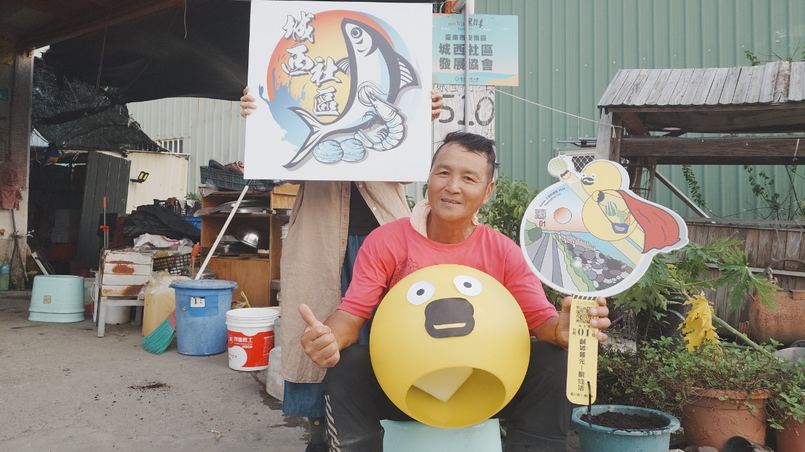
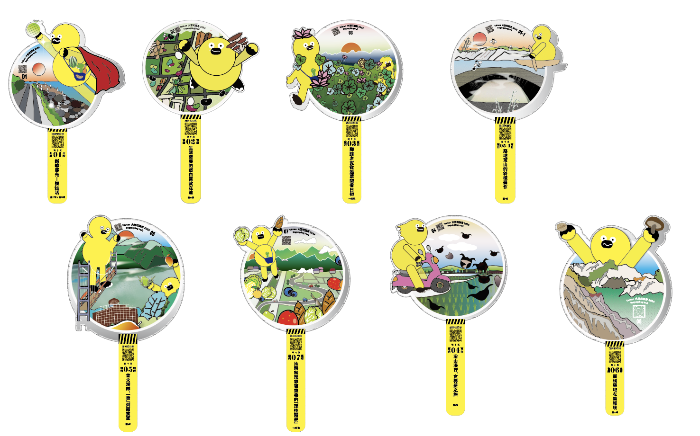
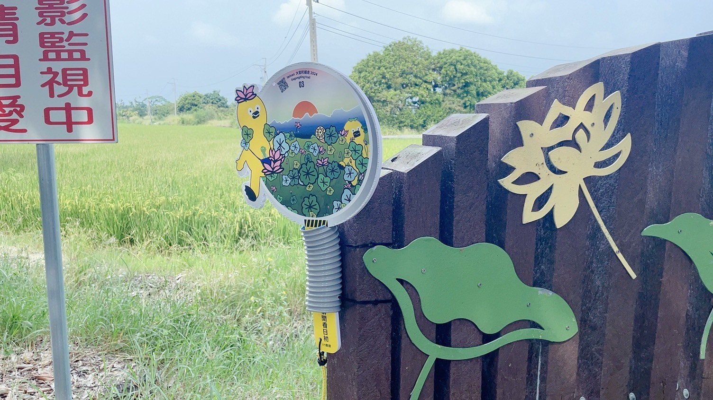

大宮町縱走📍圓標搜！蒐！收！🔎
請禮貌詢問，並遵守地圖內店家需求說明
圓標分別藏匿於指定的『7條城鄉步道』、『城內物產合作店家』 、『府城柑仔店』
圓標分別藏匿於指定的7條城鄉步道上、城內物產合作店家 、府城柑仔店（位於陳德聚堂內），可以參考地圖連結，切記蒐集拍照前請遵照地圖內店家說明，禮貌詢問。
部分店家需要預約，可依照欲前往的藏匿點查詢，請參考地圖內詳細說明。
可用『大宮町縱走 Line@』反應或透過『誠美社會企業FB』通知我們
民眾可自行前往各藏匿點蒐集，完成後至府城柑仔店（位於陳德聚堂內）兌換。
無需，
只需要蒐集單條路線上『3個城鄉步道圓標藏匿點＋1個該步道城內物產合作店家＋府城柑仔店（位於陳德聚堂內）』。
需注意圓標不可重複。
是的！同一條唷！
不用，
只需要蒐集『1個該步道城內物產合作店家』即可達標。
但也歡迎，多多前往享用各店家手藝。
可折抵府城柑仔店內消費，或至城內物產合作店家購買媒合餐點使用（店家其他餐點不予使用）
也可以在12/7、8 風土野台，市集中使用。
唯有一親自來現場選購與領獎方式的選項唷。（請見諒）
因為內含府城柑仔店的金額兌換卷，需親自來現場選購，並使用兌換券結帳。
可以的，現場出示完成者的圓標牌合照+完成者身分證明文件即可代領。
領取時會簽收，避免二次領取。
113年10月25日至114年6月30日(兌換獎品至114年7月31日止)，活動期間皆可領取
府城柑仔店（位於陳德聚堂內）｜700台南市中西區永福路二段152巷20號


